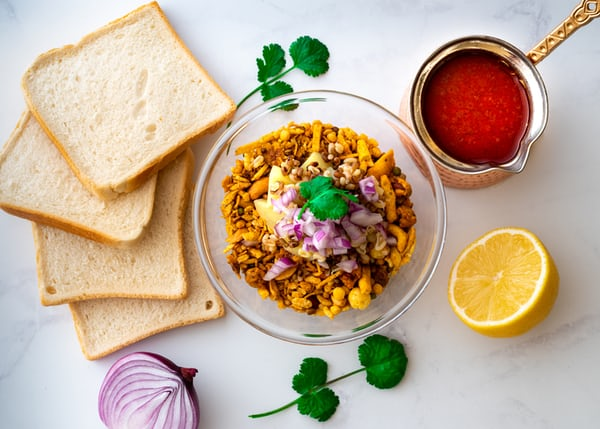
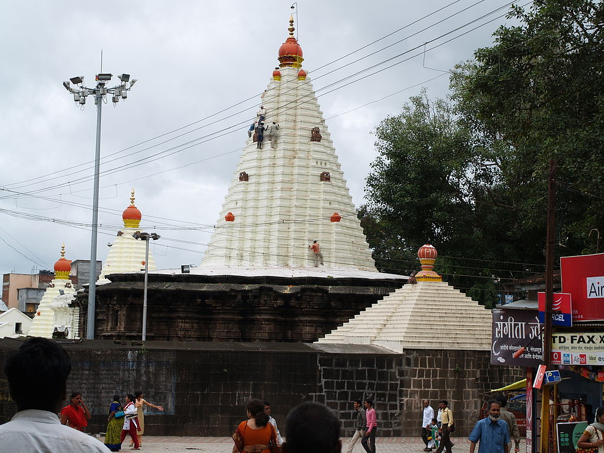
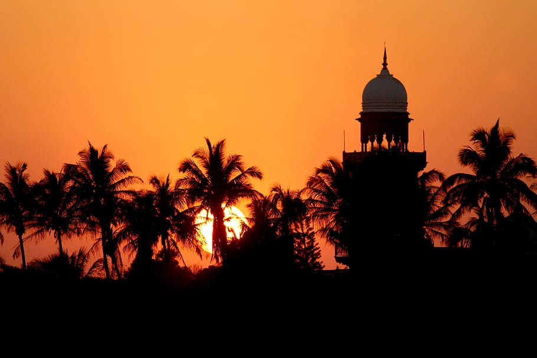

KOLHAPUR

The history of Kolhapur can be tracked back to the Satavahan empire era. In the modern times, Kolhapur has played a significant role in the politics of Maharashtra state. The city is famous of Kolhapur SAAJ (necklace with traditional pattern), jaggery ,Kolhapur chappal (traditional leather sandal) and wrestling. Kolhapur is also famous for it non-veg food recipes (Marathi: Kolhapuri pandhara rassa, tambadaa rassa) and unique spices
Kolhapur is a historic and ancient holy city situated in the Indian state of Maharashtra, India. Situated on the banks of river Panchganga, Kolhapur is the largest city in Southern Maharashtra, and a prominent city in Paschim Maharashtra. It is the administrative headquarter of Kolhapur district. Prior to Indian independence, Kolhapur was a 19 gun salute princely state (Kolhapur State) ruled by the Bhosale Chhatrapati of the Maratha Empire. Kolhapur is known for world famous leather Kolhapuri chappal. Also known as paytans, these are known for its simple styles, quality of leather and design. Different artisans all over the city make these exquisite chappals.
FAMOUS THINGS IN KOLHAPUR

.jpg)


